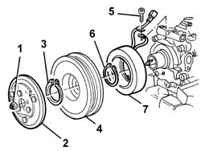
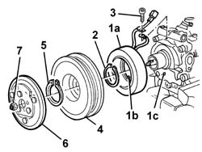

5040A34 PULLEY WITH COMPRESSOR ELECTROMAGNETIC COUPLING - R+R WITH COMPRESSOR REMOVED
- Path
- Procedures > 50 AUXILIARY UNITS > 5040 AIR CONDITIONING CASING AND COMPONENTS > 5040A CHECKING OPERATION OF AIR CONDITIONER (TEMPERATURE) > 5040A34 PULLEY WITH COMPRESSOR ELECTROMAGNETIC COUPLING - R+R WITH COMPRESSOR REMOVED
- Kind
- repair procedure (removal / refitting; the operation number is the code)
- Applies to
- engines: 2.0 JTS, 3.2 V6, 1.9 JTD 16V; all production periods
- Interactive page
- https://sloeber94.github.io/elrnDB-aGt/en/#/125001524
Applies to: engines: 2.0 JTS, 3.2 V6, 1.9 JTD 16V; all production periods
 Removing
Removing
 Refitting
RefittingClamp the compressor into a bench vice.
1. Undo the self-locking nut.
2. Remove the damping plate.
3. Undo the retaining ring.
4. Remove the pulley.
5. Undo the electrical cable retaining bolt.
6. Undo the retaining ring.
7. Remove the electromagnetic coupling.

Applies to: engines: 2.0 JTS, 3.2 V6, 1.9 JTD 16V; all production periods
Refitting
RemovingCheck the pulley and electromagnetic coupling are undamaged and check electromagnet electrical operation if necessary.
1. Fit electromagnetic coupling (1a) into its seat and fit protrusion (1b) into hole (1c).
2. Do up the retaining ring and check it is properly secured.
3. Place the retainer for the electrical cable in position and tighten the bolt.
4. Refit the pulley.
5. Do up the retaining ring and check it is properly secured.
6. Position the damping plate.
7. Tighten the self-locking nut.

Applies to: engines: 2.0 JTS, 3.2 V6, 1.9 JTD 16V; all production periods
Remove the compressor from the vice and ensure the pulley turns freely.